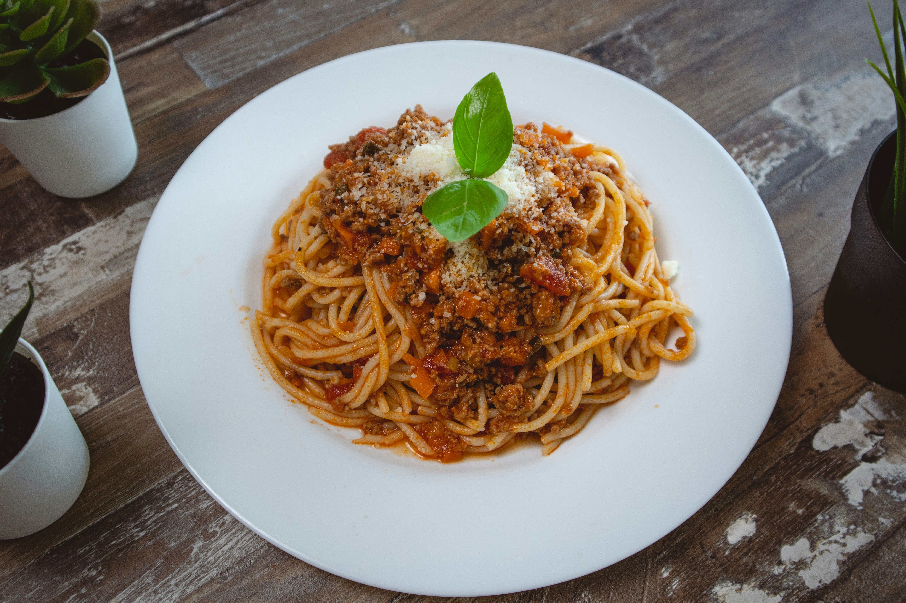

Spaghetti Bolognese

Description
Spaghetti Bolognese is a hearty Italian-inspired dish featuring pasta topped with a rich, slow-cooked meat sauce. It’s full of deep, savory flavors and perfect for a comforting meal..
Ingredients
- Spaghetti pasta
- Ground beef
- Onion (chopped)
- Garlic (minced)
- Tomato sauce or crushed tomatoes
- Tomato paste
- Olive oil
- Salt and black pepper
- such as oregano and basil
Steps
- Cook spaghetti according to package instructions and set aside.
- Heat oil in a pan and sauté onion and garlic.
- Add ground beef and cook until browned.
- Stir in tomato sauce, tomato paste, and spices. Simmer for 15–20 minutes.
- Serve sauce over spaghetti and enjoy.
Home